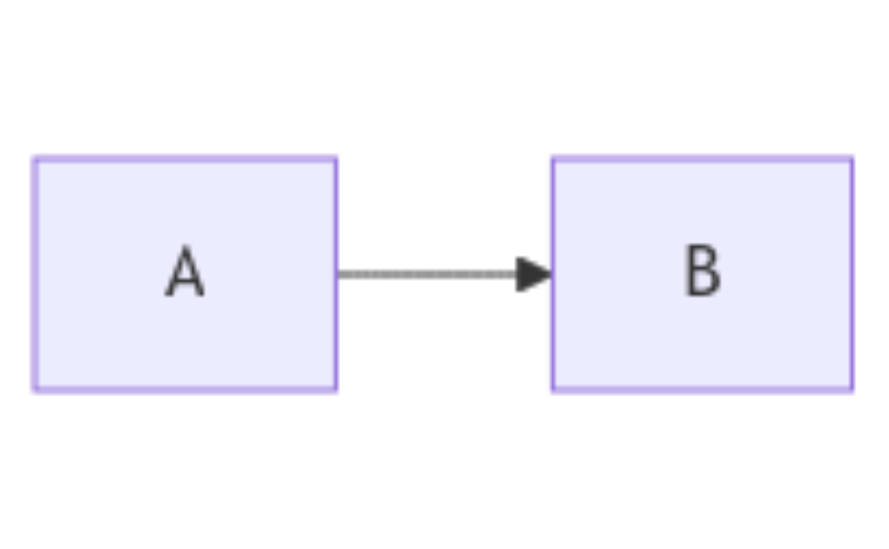

These functions download the diagram from https://mermaid.ink which generates the image.
Usage
mermaid(
diagram,
format = "png",
theme = "default",
dir.dest = tempdir(),
file.dest = paste0(rlang::hash(link), ".", format),
server = Sys.getenv("MERMAID_URL", "https://mermaid.ink"),
link = mermaid_gen_link(diagram, theme = theme, format = format, server = server)
)
mermaid_gen_link(
diagram,
theme = "default",
format = "png",
server = Sys.getenv("MERMAID_URL", "https://mermaid.ink")
)
# S3 method for class 'mermaid'
plot(x, add = FALSE, ...)Arguments
- diagram
Diagram in mermaid markdown-like language or file (as a connection or file name) containing a diagram specification
- format
Image format (either
"jpg", or"png", or"svg")- theme
Mermaid theme (See available themes in Mermaid documentation)
- dir.dest
Destination folder for the downloaded image. This parameter is ignored if
file.destcontains a folder path.- file.dest
Path to the downloaded image. It's combined with
dir.destif it only contains the name of the file without a folder path.- server
URL of the server used to generate the link
- link
Link generated by mermaid_gen_link
- x
character mermaid diagram dialect
- add
logical to add the diagram on the existing plot
- ...
Other argument passed to mermaid
Value
mermaidreturns the path to the downloaded image orNAif the download failed. In this latter case, get the error message in the attribute "error".mermaid_gen_linkreturns the link to the web service which generates the diagramplot.mermaidproduces a R plot with the mermaid diagram
Nothing, used for side effect.
Details
Compared to the diagrammeR::mermaid function, the generated image or plot
is not a HTMLwidget and can be knit in pdf through latex and
moreover, its size can be controlled with fig.width and fig.height.
If the generation failed (due to internet connection failure or syntax error
in mermaid script), the functions raises no error (see mermaid returned value).
By default, mermaid uses the service https://mermaid.ink.
One can define an alternative server to use with the environment variable
MERMAID_URL.
Examples
diagram <- "flowchart LR\n A --> B"
mermaid_gen_link(diagram)
#> [1] "https://mermaid.ink/img/pako:eNqrVkrOT0lVslJKy8kvT85ILCpR8AmKyVNQcFTQ1bVTcFLSUcpNLcpNzExRsqpWKslIzQUpTklNSyzNKVGqrQUAjIcUfg?type=png"
# \dontrun{
f <- mermaid(diagram)
f
#> [1] "/tmp/RtmpSroDDs/a0a48ce294b1a6f989506ce145809601.png"
# For displaying the diagram in Rmarkdown document
knitr::include_graphics(mermaid(diagram))
#> [1] "/tmp/RtmpSroDDs/a0a48ce294b1a6f989506ce145809601.png"
#> attr(,"class")
#> [1] "knit_image_paths" "knit_asis"
# Clean temporary folder
unlink(f)
# }
# \dontrun{
s <- "flowchart LR
A --> B"
class(s) <- c("mermaid", class(s))
plot(s)

# }